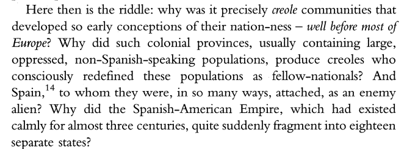
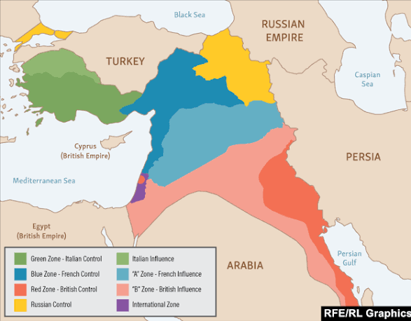
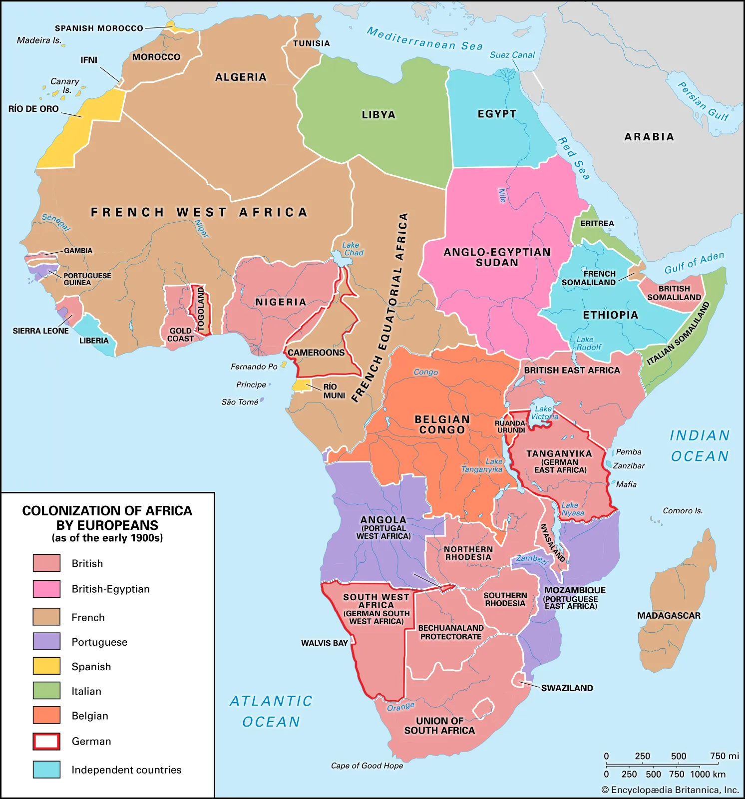
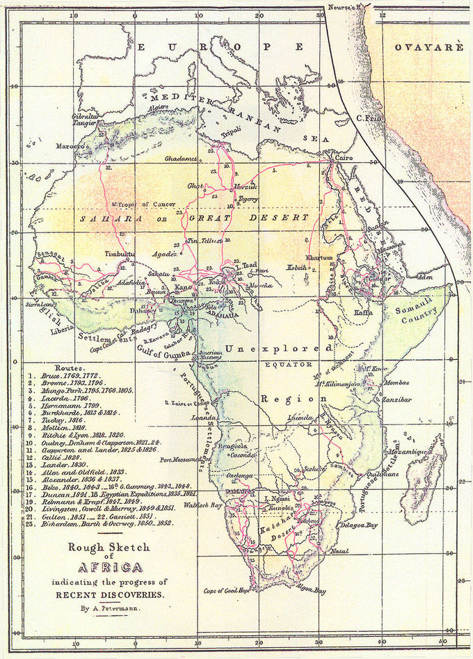

Resistance, Memory, Disrupted Narratives
Empires don't only conquer territory. They conquer the right to narrate. Official histories frame expansion as progress, displacement as development, and resistance as disorder. The counter-archive of empire lives in the documents, testimonies, and creative works that institutions tried to suppress, discredit, or simply never collected.
- Frantz Fanon's The Wretched of the Earth (1961) remains one of the most direct accounts of what it costs a colonized people to reclaim their own story. Fanon writes not only about political liberation but about the psychological work of dismantling an identity that was imposed by force. The colonized person, he argues, does not just need land returned. They need the right to name their own experience returned, and that right was taken through institutions, schools, archives, courts, and the written record.
- Michel Foucault's Language, Counter-Memory, Practice (1977) offers a framework for understanding why official memory is so durable and why counter-memory is so difficult to sustain. Foucault argues that dominant institutions do not simply record history, they produce it, determining which events are legible as significant and which are allowed to fade. Counter-memory, by contrast, is the practice of recovering what official history has ruled out, the fragment, the personal account, the version of events that did not make it into the archive. It is not a correction to official history so much as a refusal of its completeness.
- The Haitian Revolution of 1791 to 1804 is the only successful enslaved people's revolution in recorded history. It's also one of the most consistently minimized events in Western historical archives. The documents from that period, letters, military dispatches, plantation records, tell the story of an empire confronting a disruption it did not have language for. The counter-memory of that revolution persisted not primarily in official archives but in oral tradition, Haitian literature, and the deliberate recovery work of historians who looked for what the dominant record left out.
- Patrice Lumumba's final letter, written before his assassination in 1961 and suppressed for decades, is a document of this same kind. Written to his wife from captivity, it was not intended for an archive. It survived because people chose to preserve it outside institutional channels. That survival is its own argument about where counter-memory lives.
Primary Excerpts:

creole communitites that developed so early conceptions of their nation-ness - well before most Europe? Why did such colonial provinces, usually containing large, oppressed, non-Spanish-speaking population, produce creoles who consciously redefined htese populations as fellow-nationnals? And Spain, to whom they were, in so many ways, attached, as an enemy alien? Why did the Spanish-American Empire, which had existed calmly for almost three centuries, quite suddenly fragment into eighteen seperate states?">


Circuits of Extraction
Empires run on paper as much as on force. Ledgers, shipping manifests, tax records, and trade agreements are the administrative infrastructure of extraction, and they survive in archives when the human cost they represent does not. The bureaucratic record of empire is often meticulous about what was taken and nearly silent about what that taking destroyed.
Adam Hochschild's King Leopold's Ghost (1998) reconstructs the Congo Free State through exactly this kind of archival excavation. Leopold II's regime extracted rubber through a system of enforced quotas, mutilation, and collective punishment. The paper trail exists, colonial reports, missionary accounts, the photographs taken by Edmund Morel and others that forced a reluctant public reckoning. What makes Hochschild's account archivally significant is not just what the documents say but the gap between the administrative language used to describe the system and the human reality that language was designed to obscure.
Giorgio Agamben's concept of bare life, developed in Homo Sacer: Sovereign Power and Bare Life (1998), describes the condition of people who exist within a political system while being excluded from its protections. In the context of imperial extraction, this describes the situation of colonized populations with precision. They were governed, taxed, counted, and administered by systems that simultaneously denied them the legal and political standing those systems claimed to extend. The administrative record of their exploitation survives in colonial archives. The record of their full humanity largely does not.
Eric Williams's Capitalism and Slavery (1944) makes the economic argument that the Industrial Revolution was financed by the transatlantic slave trade, that European modernity and colonial extraction are not parallel histories but the same history. The shipping manifests and port records of the 18th century are documents of this circuit, goods listed by weight and value, enslaved people listed as cargo. The archive of empire is an archive of profit, and reading it as such changes what it means.
Dominant Language
Language isn't a neutral vessel. When empires arrive, one of their first administrative acts is linguistic. Schools teach in the colonizer's language. Legal systems operate in it. Documents that grant or deny rights are written in it. To exist within the empire's institutions, the colonized must become legible in a language that was not theirs, and that transaction carries a cost that outlasts formal colonial rule.
Ngũgĩ wa Thiong'o's Decolonising the Mind (1986) is the clearest account of this cost in the literary record. Ngũgĩ describes being beaten at school for speaking Gikuyu, his first language, and the gradual internalization of the idea that English was the language of intelligence and Gikuyu the language of backwardness. His decision, made in 1977, to stop writing in English and write only in Gikuyu and Swahili was not only a personal choice. It was a public argument about who literature is for and what it means to write in the language of the people whose story you are telling.
Primary Excerpts:
"A civilization that proves incapable of solving the problems it creates is a decadent civilization. A civilization that chooses to close its eyes to its most crucial problems is a stricken civilization. A civilization that uses its principles for trickery and deceit is a dying civilization."
Discourse on Colonialism, Aimé Césaire, 1950
"The religious dictum from the sixteenth and seventeenth centuries, “convert—for your own good—or I will kill you” lived on in subsequent translations: during the eighteenth and nineteenth centuries, in a cultural key, “civilize—for your own good—or I will kill you,” and, in the (late-) nineteenth and twentieth, in an economic-social format, “develop—for your own good—or I will kill you.” Finally, the overtly political dimension was added in the (late) twentieth and twenty-first centuries: “democratize—for your own good—or I will kill you.”"
Religion, Modernity, and the Global Afterlives of Colonialism, Atalia Omer & Joshua Lupo, 2024
Edward Said's Orientalism (1978) extends this analysis beyond schools and into scholarship itself. Said documents how Western academic vocabulary constructed an entire framework for describing the East, words like exotic, tribal, timeless, and irrational, that served imperial purposes by making the colonized world appear to need the management that colonizers offered. That vocabulary did not stay in academic journals. It shaped journalism, policy, law, and the categories through which colonized people were administered.
Colonial-era missionary language primers and dictionaries are among the most revealing physical artifacts of this process. Often the first things printed by colonial presses in a new territory, they were tools for making indigenous people legible to the administration, and for making the administration's language the only language that counted. The official records renaming cities, rivers, and territories follow the same logic. Bombay to Mumbai, Rhodesia to Zimbabwe, the administrative paper trail of reclaimed names tells the story of dominant language and its undoing simultaneously.
Powerful Cartographies
Maps are not neutral representations of space. They are tools of power, instruments for claiming, controlling, and organizing territory. The act of mapping is an act of authority, deciding what is important, what is visible, and what is omitted.
A map looks like a fact. It's an argument. Every decision made in producing a map, what to include, what to leave blank, what scale to use, where to place the center, encodes a political position. Empires understood this. Maps were among their most powerful administrative tools, not because they described the world accurately but because they made imperial claims look like geographic reality.
The Scramble for Africa map produced at the Berlin Conference of 1884 to 1885 is among the most legible single images of extraction as administrative act. European powers divided a continent they had not surveyed, drawing borders through territories they had never entered, across communities, languages, and political structures that had existed for centuries. That map is not a description of Africa. It is a claim made on paper that was then enforced with violence.



The Sykes-Picot Agreement of 1916 is the document that most directly illustrates cartography as imperial act. British and French diplomats drew lines across the Middle East, dividing it between their spheres of influence, with no meaningful consultation with the people living there. The pencil lines on that map produced borders that are still generating conflict more than a century later. The map did not describe political reality. It created one.
Benedict Anderson's Imagined Communities (1983) argues that nations are not natural formations but constructed ones, and that maps are among the primary tools of that construction. The map of a nation, he writes, comes before the territory it claims to represent. Colonial administrations produced maps of territories they intended to control, and those maps became the basis for legal claims, resource allocation, and military strategy. The blank spaces on 19th century European maps of Africa and South America, labeled unknown or unexplored despite being inhabited for millennia, are not admissions of ignorance. They are assertions that what existed in those spaces did not count as something that needed to be mapped.